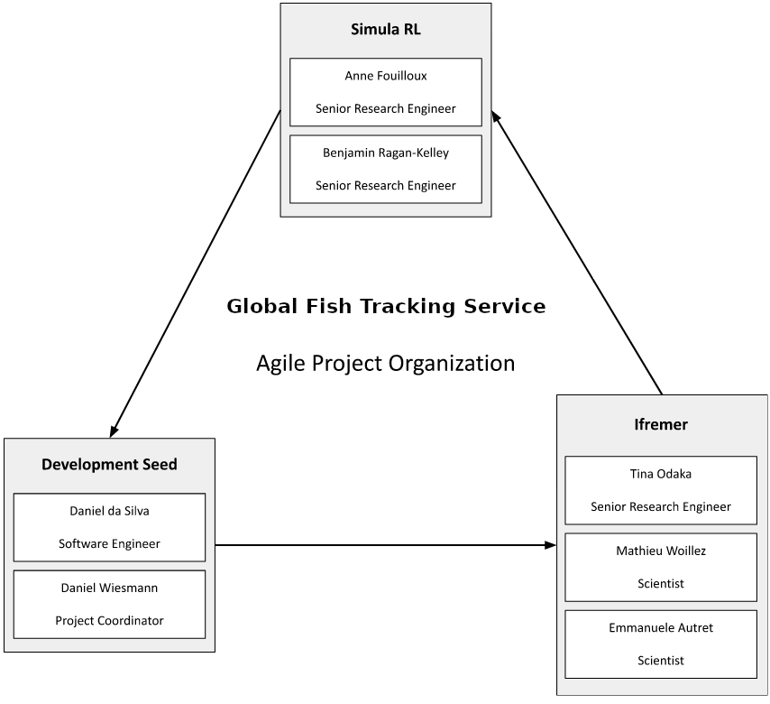

GFTS D5.1 Project Management Plan for Use Case Application
Introduction
This Project Management Plan serves as a comprehensive guide for achieving a successful execution of the Global Fish Tracking System (GFTS) project. It outlines the strategic objectives, scope, and organizational structure that we employed to achieve project success. This plan was used as a roadmap for stakeholders to collaborate effectively and navigate through the project lifecycle.
Throughout this document, aspects such as team organization, project scheduling, project documentation, code publishing strategy, and communication strategies are delineated. These components were designed to foster proactive agile decision-making and mitigating potential obstacles that may arise during project implementation.
During the implementation of this project, we have employed a co-creation approach to ensure transparency in decision-making, documentation, and communication, fostering trust among stakeholders and empowering informed participation. By embracing these principles, we aimed to not only deliver a cutting-edge GFTS platform but also to contributing to the advancement of knowledge, technology, and sustainability in biologging science and marine species conservation.
Organization
This section describes the project team and how we communicated and organized our work.
Project team
Our project team consists of three entities with a common ground but complementary focus areas. Each participant will focus on a separate area of expertise throughout the project. The first is focused on scientific modeling, the second is focused on infrastructure deployment and management, and the third is focused on public facing interface design.
Institut Francais Recherche pour l’Exploitation de la MER (IFREMER) is an industrial and commercial public body. It operates under the joint auspices of the Ministry of National Education, Research and Technology, the Ministry of Agriculture and Fisheries and the Ministry of Equipment, Transport and Housing. Being involved in all the marine science and technology fields, IFREMER has the capability of solving different problems with an integrated approach.
IFREMER scope of actions can be divided into four main areas: understanding, assessing, developing and managing the ocean resources; improving knowledge, protection and restoration methods for marine environment; production and management of equipment of national interest; helping the socio-economic development of the maritime world. Their research is grounded in sustainable development and open science. IFREMER has more than 1,5000 personnel that are spread throughout France. IFREMER is the representative of the users of the tool proposed in this activity.
Simula Research Laboratory (SRL) is a Norwegian research institute. They are organized as a private company but are owned and funded by the Norwegian government. Their main objective is to create knowledge about fundamental scientific challenges that are of genuine value for society. They are deeply involved in the Pangeo ecosystem that will be a cornerstone of this use case.
Development Seed (DS) is a Portuguese small business that builds geospatial products with open source software and open data to empower our partners to track and understand a changing planet. It is part of a global group, headquartered in Washington DC and established in 2003. Development Seed has 56 employees, consisting of cloud engineers, product developers and designers, and AI/ML engineers. Development Seed is trusted by organizations like NASA, Microsoft, AWS, the Red Cross and the World Bank to build out their geospatial data infrastructure and products.
IFREMER is the end user of the proposed decision support tool. In this role, they provided the end-user perspective throughout the whole project to ensure that the end product fits the relevant user needs. IFREMER was also the scientific partner that will be responsible for the data and modeling. SRL has been building the infrastructure to support the modeling behind the decision support tool. Based on the infrastructure and the modeling, Development Seed has been responsible to build an interface that will allow exploring the model output and run what-if scenarios.
Communication
In this project we kept the line of communications short and direct. This helps the agile framework approach to development that we will adopt throughout the project. The consortium leader will be the main interface with Starion and ESA representatives throughout the project. Within the consortium, communication will happen directly between the doers of the different parts based on demand. We will hold regular sprint review meetings to update each other on progress and blockers so that we can work efficiently. This will help to identify and solve challenges as early as possible.
In case of disagreement, we held a disagreement meeting where we tried to find a solution that everyone can work with. The idea of this was a “disagree and commit” management principle. We tried to find a way forward that is workable for all participants. In case this fails, the consortium leader had the last words on the decisions.
The project manager was Daniel Wiesmann from Development Seed. The Work Package (WP) leaders were responsible for the achievement of the respective goals identified within each WP, the exchange of products and results with other work packages, the communication within their WP and with the Project Manager. Project meetings were be held on a regular basis, by means of video conferences or in person to ensure a coherent, consistent and efficient execution of all project tasks. Potential problems were identified and solutions were found at the respective level, like the overall project level or the work package level.
Meetings as well as the regular progress reports helped to supervise the work progress and compare it to the respective project targets, the timely execution of the tasks, and the quality of the deliverables. The described measures helped to ensure that the project remains within schedule, within budget, and achieves its objectives.
All deliverables were compiled by the respective WP leaders and submitted for quality control to the project manager. The project manager reviewed the deliverable and iterated with the WP leader if required. All deliverables were submitted by the project scientific and management lead, Daniel Wiesmann.
The following graphic illustrates the agile project organization that we used for our consortium.

Project Roles
The table below summarizes the position of each team member in his or her own organization. All the team members are very experienced and distinguished scientists or engineers in their field of expertise. The table below also summarizes the role(s) and average time dedicated to the project by the key personnel.
We had several key types of roles within the consortium.
End user role, providing input to the agile development process ensuring final product addresses key user needs
Infrastructure engineering role, responsible for design and implementation of the system architecture on the backend
Scientific role holding the knowledge for the modeling and responsible for implementation of the fish movement modeling in the platform
Interface design and development role, responsible for the implementation of the interactive interface for the decision support tool. This includes a product owner perspective.
Code and documentation
We used GitHub for coordination of the software development throughout our use case. Following our principles of open scientific collaboration and transparency, we worked on two fully open repositories from the beginning. The backend and frontend repositories could be accessed through the following URLs
[https://github.com/destination-earth/DestinE_ESA_GFTS]
[https://github.com/developmentseed/gfts/]
In the same repository we also published all the documentation of the use case, including the Use Case Descriptor document. We based our documentation on the [JupyterBook] library and produced a rendered version of the documentation through GitHub pages under the following url
[https://destination-earth.github.io/DestinE_ESA_GFTS]
This documentation website was continuously updated throughout the duration of our use case project.
Planning
This section describes the schedule of the study. The duration of the work of this study was 12 months. We started the project with a formal internal Kick-Off (KO) meeting, after which we started the agile development process.
We organized development in two-week sprints and held regular sprint review meetings. This ensured that we tracked progress and that our solution emerged through collaboration, continual planning and learning, and in line with our plan to release tightly integrated high-quality software throughout the project. While we applied lean and agile development principles, we foresaw four major technical milestones that were reviewed in collaboration with Starion. Below is the table listing these major technical Milestones.
Milestone (MS) Name Schedule Date Description
MS1: Release Review 1 (RR1) April 30, 2024 First Use Case release
MS2: Release Review 2 (RR2) October 3, 2024 Second Use Case release
MS3: Release Review 3 (RR3) April 16, 2025 Third Use Case release
MS4: Final Review (FR) July 17, 2025 Final Use Case release
Work breakdown
The main results and outputs from the project were:
Final Report document summarizing the implementation of this project
One or more GitHub repositories containing all the source code developed under this project, released under a major open source license such as the GNU public license.
An functional version of the developed decision support system, fully deployed to the DestinE Platform platform
Documentation of the decision support tool and all the source code
Our work programme was organized under 4 main tasks that are tightly aligned with the ones given in the SoW. The four main tasks and their corresponding work packages were
Task 1: Project Management, WP1
Task 2: Agile Use Case Development and Demonstration, WP2
Task 3: Use Case Promotion, WP3
Task 4: Use Case Exploitation, WP4
The tasks were bundled under their corresponding work package as indicated above.
GANTT chart
In the GANTT chart below, the months are abbreviated to M, i.e. M5 represents Month 5.
ID Key Task
WP1 Project Management
WP2 Agile Use Case Development and Demonstration
WP3 Use case promotion
WP4 Use case exploitation
Deliverables
The following table lists the deliverables and when they are due
Ref Title Delivery date/MS
D5.1 Project Management Plan for Use Case Application KO+1, RR1, RR2, RR3, FR
D5.2 Use Case Descriptor KO+1, RR1, RR2, RR3, FR
D5.3 Use Case Application (software)
D5.4 User Validation Report FR
D5.5 Use Case Promotion Package RR1, RR2, RR3, FR
D5.6 Use case Exploitation Roadmap FR
D5.7 Use Case sustainability Analysis Technical Note FR
D5.8 User Manual FR
D5.9 Service Level Agreement FR
PR Progress Reports Monthly
QU Updates Quarterly
SRS Software Requirement Specifications KO+1, RR1, RR2, RR3
SVVP Software Verification and Validation Plan KO+1, RR1, RR2, RR3, FR
SVVR Software Verification and Validation Report RR1, RR2, RR3, FR
SRF Software Reuse File RR1, RR2, RR3, FR
SRP Software Release Plan KO+1, RR1, RR2, RR3, FR
FR Final Report FR
CCD Contract Closure Documentation FR
Meeting schedule
We had a close and up-to-date communication with our point of contact at Starion. We scheduled and organized monthly progress meetings with the Starion representatives and contributed to monthly reports. In addition, we took part in the following reviews to create opportunities to have a more in-depth review of the status of the use case and progress made.
Review name Date Comment
RR1 Release Review 1 April 30, 2024 Updated timeline according to CCN.
RR2 Release Review 2 October 3, 2024 Updated timeline according to CCN.
RR3 Release Review 3 April 16, 2025 Updated timeline according to CCN.
FR Final Review July 17, 2025 Updated timeline according to CCN.